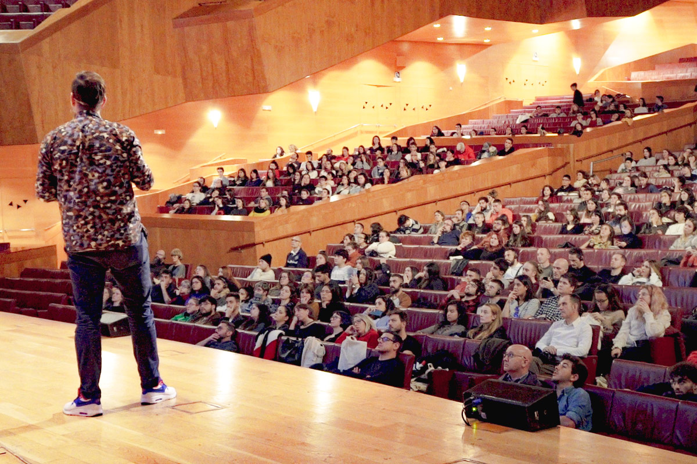
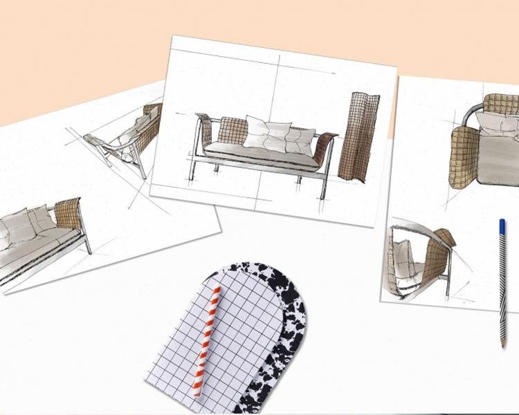

SELECTED BILBAO 2019: 15 Y 16 NOVIEMBRE
SELECTED es un evento de dos días que involucra a artistas, creativos y diseñadores de las industrias creativas. La edición de este año tiene lugar en Bilbao (Bizkaia) y será una oportunidad para inspirarse con presentaciones creativas y actividades culturales. Las entradas están a la venta, ¡no olvides obtener tu pase!
El objetivo de SELECTED es recopilar y compartir la inspiración visual y las tendencias actuales en diseño con aquellos interesados en el paisaje cultural e industrial. Con más de 1700 proyectos, SELECTED apoya una comunidad activa de creativos. ¡Prepárese y envíe su proyecto a la convocatoria!

ACTIVIDADES CREATIVAS
La comunidad Selected ha estado exponiendo obras de arte visuales en múltiples espacios de Europa y hay varias exposiciones próximas en el futuro cercano. Una oportunidad única para descubrir representaciones visuales de proyectos e ideas en todas las disciplinas de diseño, mientras disfruta de la arquitectura histórica de su entorno. Ciudades importantes como Bilbao, París, Lyon o Madrid ya habían acogido a los seleccionados, estén atentos a los próximos eventos.
